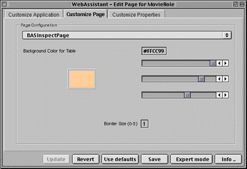

PATH
WebObjects 4.0 Documentation >
WebObjects Tools and Techniques
 Table of Contents
Table of Contents  Previous Section
Previous Section
Customizing Pages
The Customize Page display of the WebAssistant enables you to set global attributes for the current page. These attributes include the page style (as determined by the page component), the color of the table, whether this color alternates with white in lists, and the size of the border enclosing the page. The following is an example of the Customize Page display:

- To change the component defining the page style, choose another component from the pop-up menu.
- To change the thickness of the border around the page, type a number in the Border Size field, replacing the current number. (A border thickness of five pixels is the maximum allowed.)
- To change the color of the table, move the sliders to the right of the sample color. The color specification is RGB-based (that is, a specific mixture of red, green, and blue). The top slider manipulates red saturation, the middle slider is for green, and the bottom slider is for blue. The three pairs of hexadecimal digits after the number sign in the field represent (left to right) saturation levels of red, green, and blue.
Table of Contents  Next Section
Next Section